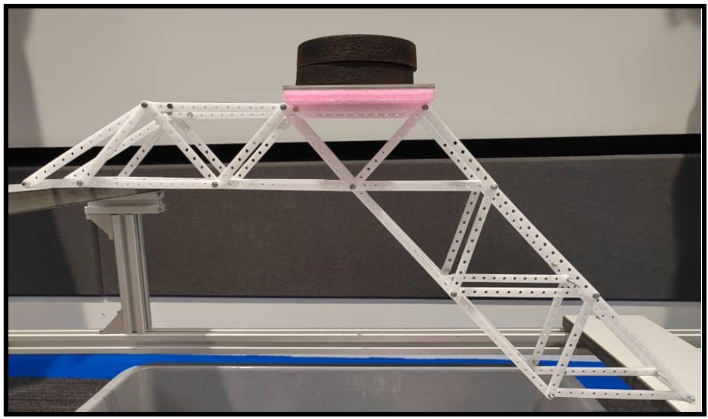
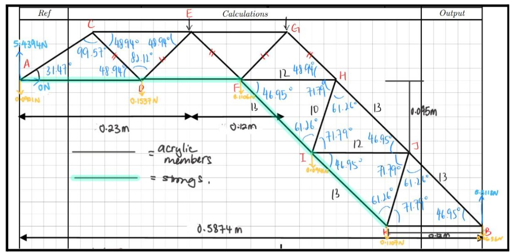
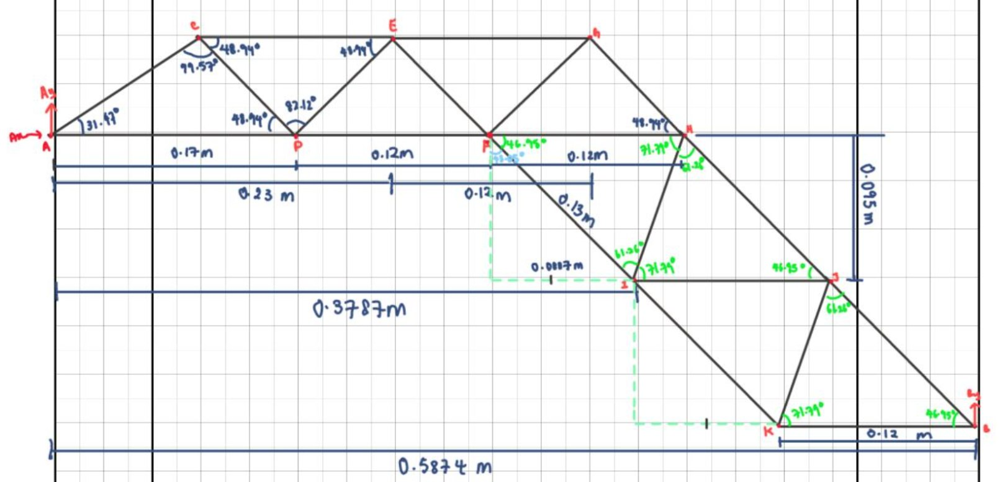
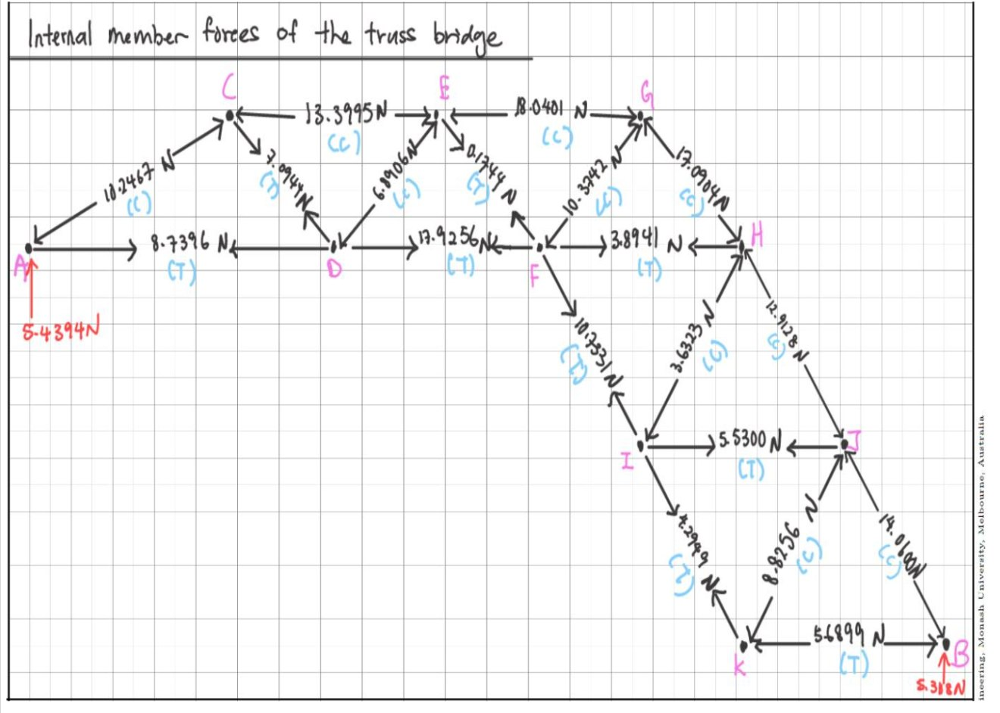
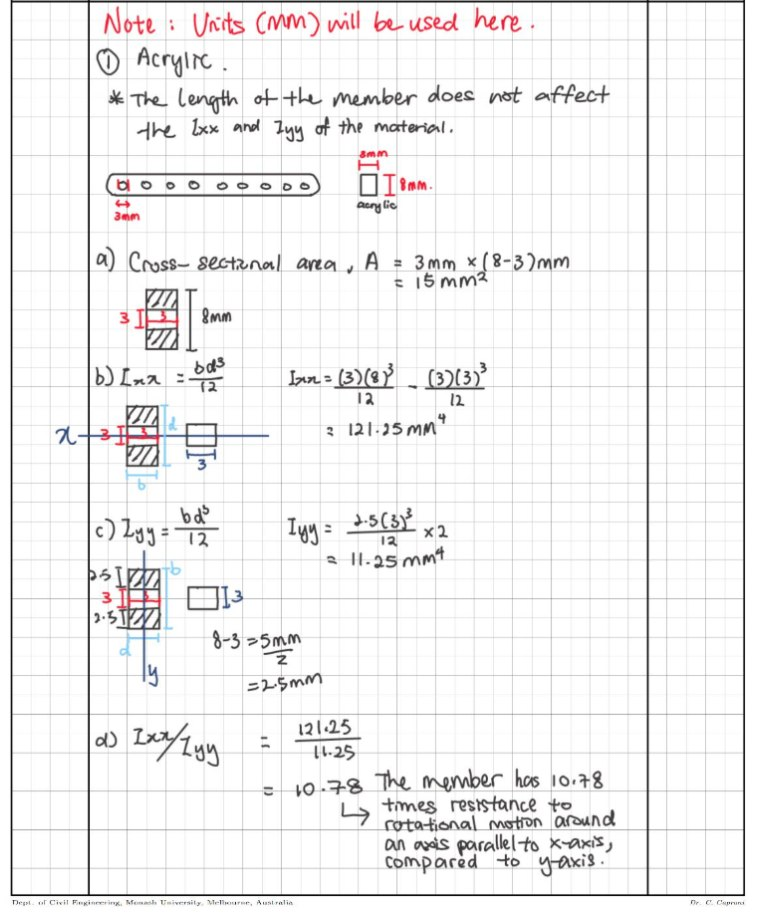

ENG1011 · July-October 2023 · Engineering Analysis
Truss Bridge Analysis & Construction
Developed structural calculations and helped construct a small truss bridge that passed a physical 4 kg load test.

Project overview
As part of a four-person team, I worked on the structural layout, hand calculations and construction of a small truss bridge. The design used acrylic members and strings and was assessed under an applied load. Our bridge successfully passed a 4 kg test.
My work
- Drew the bridge arrangement and annotated the geometry, member lengths and angles.
- Prepared member-force calculations to identify tension and compression in truss members.
- Calculated section properties for the perforated acrylic members, including second moments of area.
- Participated in constructing the actual bridge and translating the analysis into a testable model.
Engineering focus
Combining truss equilibrium, member classification and cross-sectional analysis with the constraints of lightweight physical construction. The drawings illustrate how the team translated calculations into a real structural assembly.
Outcome: the finished bridge supported a 4 kg test load and passed.
Analysis → construction → physical testing




Physical test
Our completed truss bridge passed the 4 kg load test.